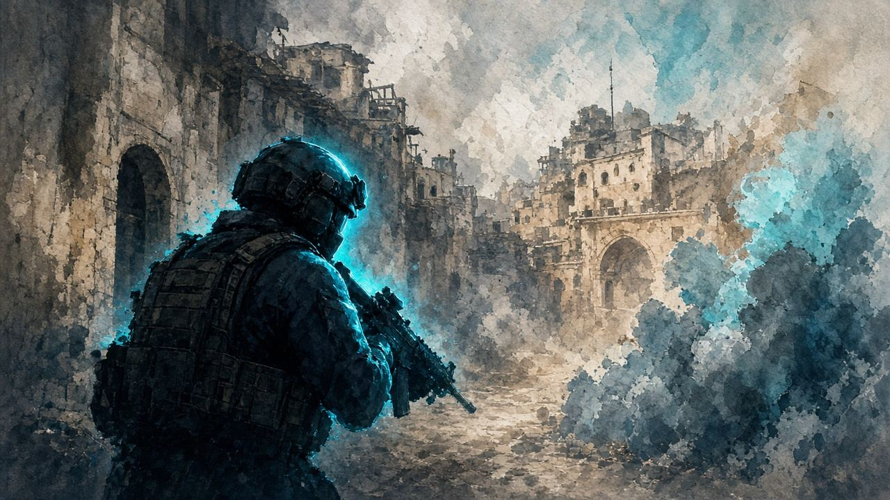

咩係 Rush
地圖長課 · 00:24
重點模式一句：控塔贏局、擊殺開路
官方章節 What Is Rush
短片待嵌
AxspT1w6JwI @ 24s · 開 YouTube →

CS2 · 官方匹配 3v3 · Complex（rush_001）· 塔控 tug-of-war · 無炸彈、無半場換邊
只講 CS2 Rush 模式 規則、Arenas 檔名池、攻防／經濟、Convoy。道具片以模式實況為準。
局末誰擁有塔誰贏。全滅對方唔等於自動贏——對方仲擁塔就要倒數內 E 到。
| 項目 | 規則 |
|---|---|
| 點塔 | 靠近按鈕 Use（E）；即時換擁有色（燈／雷達） |
| 全滅後倒數 | 標準房最多約 7s；Castle／Convoy 約 14s（09-23 補丁） |
| 回合時間 | Start／Mid 40s；Castle／Convoy 60s；最後 10s 警告＋beep |
| 防守全滅攻方 | 防守直接勝（擁塔方） |
| 攻方全滅擁塔方 | 倒數內必須點塔，否則原擁有方仍勝 |
| 邊 | 永不換邊；攻／守跟戰線走 |
正文以遊戲檔案名為準。Valve 海報另有 Playhouse／Tunnel 等名，同檔唔完全一致——唔好當唯一名單。
| 池 | 房間（檔名） |
|---|---|
| Start（抽 1） | Spire｜Wallbang｜Big Box｜Madhouse |
| Mid（抽 4） | Sewer｜Dogleg｜Trainyard｜Crane｜Bloc｜Hydro｜Atomic｜Medusa｜Bear｜Steel｜Container｜Drop |
| Ends | T Castle｜CT Castle |
| 決勝 | Convoy（雙列車；可跌落） |
重點模式一句：控塔贏局、擊殺開路
官方章節 What Is Rush
AxspT1w6JwI @ 24s · 開 YouTube →
重點Start 檔名房巡禮（Spire）
Freeze 讀房型再買槍
AxspT1w6JwI @ 239s · 開 YouTube →
重點Mid 房間巡禮入口（Sewer 起）
近戰口袋：SMG／散彈＋甲
AxspT1w6JwI @ 642s · 開 YouTube →
重點60s Castle；攻方勝＝整場即終
倒數約 14s；全買打塔
AxspT1w6JwI @ 1719s · 開 YouTube →
敗後 bonus 高——多數情況敗後都買；少做長 save。Freeze 叫工分雷。
| 項目 | Rush |
|---|---|
| 開局 | $800｜上限 $10,000 |
| 勝獎 | $2,500／人 |
| 首敗 bonus | $2,100｜連敗每階 +$750 |
| 擊殺 | 約 $300（多源） |
| 手榴彈 | 每人每回合只能買 1 顆（煙／閃／火／HE 四選一） |
重點每人每回合只能買 1 顆雷；敗後多數買
Freeze 分工煙／閃／火／HE
AxspT1w6JwI @ 137s · 開 YouTube →
重點更新片內 3v3 Rush 鎖秒（約 30s）
其餘段屬其他更新內容，唔當全片教材
YZeK-xR72yM @ 362s · 開 YouTube →
要點塔先贏。雙人進；雷留給開塔角；決殺貼塔；全滅即 E。
重點打完人要即刻轉塔——擊殺只係開路
決殺盡量喺塔附近；全滅後立即 Use
aSDEhcixTK4 @ 68s · 開 YouTube →
重點讀房型後雙人進；Cover 睇第二路
雷留開塔角；唔好三人各 peek
aSDEhcixTK4 @ 0s · 開 YouTube →
重點睇戰線點樣一格一格推
章節已核：Game1@0／Game2@233
IkDC2g2z2HM @ 0s · 開 YouTube →
時間對你有利。睇接近路＋trade——唔使三人貼塔身。
重點擁塔拖鐘；交叉 trade 多過死盯塔身
被搶返即刻重新 Use
aSDEhcixTK4 @ 128s · 開 YouTube →
重點攻守隨戰線轉——邊唔換，角色會變
Game2 @ 233s
IkDC2g2z2HM @ 233s · 開 YouTube →
邊永遠固定；「攻／守」跟戰線走。Castle 局 60s；攻方勝 Castle＝整場即終。
| 邊 | 開局 | 之後 | 最終目標 |
|---|---|---|---|
| T | 第 1 局必攻 Start | 向 CT Castle 推時攻；被推返時守 | 攻下 CT Castle |
| CT | 第 1 局守 Start（開局擁塔） | 向 T Castle 推時攻；被推返時守 | 攻下 T Castle |
雙列車廂；spawn 兩端極遠；60s；倒數最長約 14s。無下一局可 save → 全買打塔。
重點7–7 Convoy 全場感；無章節＝整段
全買打塔；跌落＝送局
VLoAsIkAJBM · 開 YouTube →
重點7–7 列車決勝講解鎖秒
全買打塔；小心跌落
AxspT1w6JwI @ 1869s · 開 YouTube →
規則／玩法／地圖／實況。B站只外連。唔嵌 Dust2「Rush B」煙片。
3kliksphilip · V40Ks24jxNo · 無章節整段
mikewater9 · AxspT1w6JwI · What Is Rush@24／經濟@137／Spire@239／Sewer@642／Castle@1719／Convoy@1869
NartOutHere · YZeK-xR72yM · 約 06:02–06:32；其餘段唔當全片教材
iNoToRiOuS · VVeDZB2D1oQ · 玩法講解整段
Gregory Hess13 · GOaKDHX_Uy8 · 繁中頁首選中文卡
CAZE GAMING · 5bOFGUrNWiI · Arenas 速覽
TbuesPOV · VLoAsIkAJBM · 7–7 列車實況
DatSimple · aSDEhcixTK4 · 面板章節已核實
Kryptek Muted · IkDC2g2z2HM · 章節已核實
秒數未標＝整段／人手跳 · 只外開
規則／房間池以外部站同實機 HUD 為準。Freeze／XP 衝突項標「以實機為準」。
招式唔清楚、想加邊個 Boss、有錯漏——丢句說話。留言經 Netlify Forms 直達網主信箱／後台，唔再只係本機保存。
你嘅意見已送出俾網主。想再講可以繼續填。